|
|
| sea anemones text index | photo index |
| Phylum Cnidaria > Class Anthozoa > Subclass Zoantharia/Hexacorallia > Order Actiniaria |
| Haeckel's
anemone Actinostephanus haeckeli Family Actinodendridae updated Jul 2024 Where seen? This bizarre and scary-looking anemone is sometimes seen on our shores in sand near reefs. Usually, only one is seen in a large area. It can retract completely into the sand at low tide. Features: 10-20cm in diameter. It has about 12 long fat cylindrical tentacles that taper at the tips, and below these, another ring of much shorter, slimmer tentacles. With body column short, smooth, with regular stripes. The tentacles are studded with large striped cones that look like batteries of stingers. Some have tentacles and oral disk that are a uniform dark brown to black with body column that may be similar to the oral disk colour or brick to bright orange-red. These fading to pale at the base of the body column. Others have tentacles are paler with greenish tints, these have fine radiating lines on the oral disk. With olive green body column.
Status and threats: As at 2024, it is assessed not to be approaching the criteria for being listed among the threatened animals in Singapore. |
|
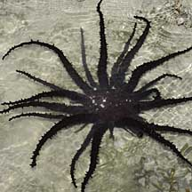 Pulau Hantu, May 09 |
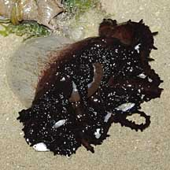 Tanah Merah, Oct 09 |
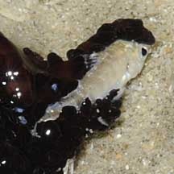 Small fishes caught in the tentacles. |
|
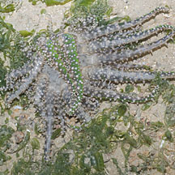 Pulau Sekudu, Jun 12 |
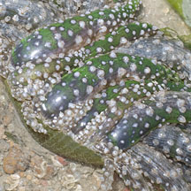 A ring of slimmer shorter tentacles below the long ones, Body column smooth with stripes. |
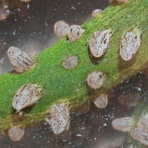 Conical bumps on tentacles - battery of stingers? Beting Bronok, Aug 15 |
|
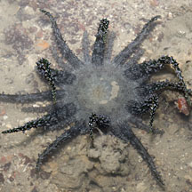 Beting Bronok, Jun 12 |
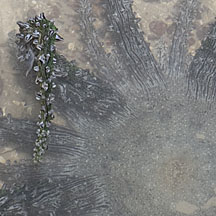 |
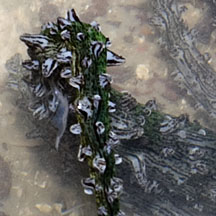 |
| Haeckel's anemones on Singapore shores |
On wildsingapore
flickr
|
| Other sightings on Singapore shores |
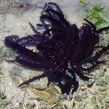 With a crab hiding under it. Pasir Ris Park-Loyang, Oct 20 Photo shared by Richard Kuah on facebook. |
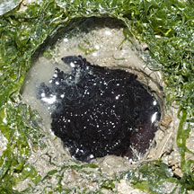 Pulau Sekudu, Jun 12 |
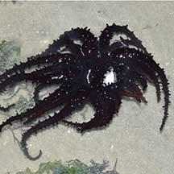 Changi Lost Coast, Jun 22 Photo shared by Loh Kok Sheng on facebook. |
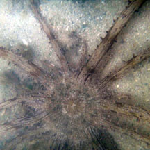 Terumbu Semakau, Dec 11 |
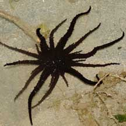 Terumbu Raya, Feb 09 Photos shared by Steven von Peltz. |
| strange anemone @ terumbu raya 09Feb2009 from SgBeachBum on Vimeo. |
Links
References
|